Audio Generation with Multiple Conditional Diffusion Model
Abstract
Text-based audio generation models have limitations as they cannot encompass all the information in audio, leading to restricted controllability when relying solely on text. To address this issue, we propose a novel model that enhances the controllability of existing pre-trained text-to-audio models by incorporating additional conditions including content (timestamp) and style (pitch contour and energy contour) as supplements to the text. This approach achieves fine-grained control over the temporal order, pitch, and energy of generated audio. To preserve the diversity of generation, we employ a trainable control condition encoder that is enhanced by a large language model and a trainable Fusion-Net to encode and fuse the additional conditions while keeping the weights of the pre-trained text-to-audio model frozen. Due to the lack of suitable datasets and evaluation metrics, we consolidate existing datasets into a new dataset comprising the audio and corresponding conditions and use a series of evaluation metrics to evaluate the controllability performance. Experimental results demonstrate that our model successfully achieves fine-grained control to accomplish controllable audio generation. Audio samples and our dataset are publicly available.
Content
1. Dataset2. Evaluation Metrics
3. Audio Samples
3.1 Comparison of Different Models
3.2 Comparison of Different Control Conditions
3.3 Comparison of Different Text Conditions
1. Dataset
Given that there are no TTA datasets with both text and control conditions, we integrate the existing datasets to a new dataset called AudioCondition that consists of the audio along with corresponding conditions. We use audio in AudiosetStrong which contains 1.8M audio from Audioset. As for the text condition, we obtain from WavCaps, a caption dataset based on ChatGPT and processed through a three-stage pipeline to filter noisy data and produce high-quality text, which has designed the text condition for the audio in AudiosetStrong. For the timestamp, we obtain it from AudiosetStrong that annotates audio with frame-level timestamp for 456 sound events. For the pitch contour and energy contour, we extract the values of them from audio with signal processing tools. We employ sound event detection (SED) systems to provide evaluation metrics, but the number of sound events supported by the current SED systems is limited. Therefore, we only select audio that includes sound events supported by SED systems for test set, but our model supports for controlling all sound event classes. We randomly split AudioCondition into three sets: 89557 samples for training, 1398 samples for validation, and 1110 samples for testing, which are publicly available.
Note that we also release all of the test set that here. For the timestamp, you can find in the "data_numpy" of the dataset, and for the pitch contour and energy contour, you can obtain them using signal processing tools.
You can download AudioCondition from the table below and the number in the table corresponds to the amount of downloaded data.
| Train | Validation | Test | Test-full | Audio |
|---|---|---|---|---|
| 89557 | 1398 | 1110 | 15866 | 120459 |
2. Evaluation Metrics
In this section, we introduce evaluation metrics for temporal order, pitch, and energy control: (1) Temporal order control metrics: inspired by the practice in the image field which evaluates the location of generated object using a object detection model, we employ a SED system to provide event-based measures (Eb) and clip-level macro F1 score (At) to assess the temporal order control capability. These metrics evaluate the presence of sound events in the generated audio, as well as the onsets and offsets using the first-place SED system in DCASE 2022 Task 4, PB-SED, on AudioCondition test set. (2) Pitch control metrics: to compare the distribution of audio pitch, we computed several moments used in the speech field including standard deviation, skewness, and kurtosis as well as the average dynamic time warping distance of the pitch distribution between the ground-truth audio and synthesized audio. (3) Energy control metrics: we compute the MAE between the frame-wise energy extracted from the generated audio and the energy in the ground-truth audio.
The checkpint of PB-SED that we used for evaluating is publicly available here.
3. Audio Samples
The following parts are the audio samples from our model, Tango, and ground-truth recordings (denoted as GT). We demonstrate from the following three aspects:
Comparison of Different Models: we aim to show that we can generate audio that is more consistent with the ground-truth recordings under the help of control conditions.
Comparison of Different Control Conditions: we aim to show that we can control the attributes of audio with different control conditions.
Comparison of Different Text Conditions: we aim to show that we can generate different audio using different text control conditions while maintaining consistency with the control conditions.
3.1 Comparison of Different Models
Note that audio samples in this part are from our model, Tango, and ground-truth recordings, which show that our model can generate audio that is more consistent with the ground-truth recordings under the help of control conditions.
Our model takes the text and control conditions as input, while Tango only takes the text conditions as input.
3.1.1 Temporal Order
We only need sound effects or noise during 1-3 seconds, but in the entire audio generated by Tango, there are sound effects or noise presenting throughout the audio.
[Our Model, Tango, GT]: Text Condition: Various sound effects and noise are present.
| Our Model | Tango | GT |
|---|---|---|
| 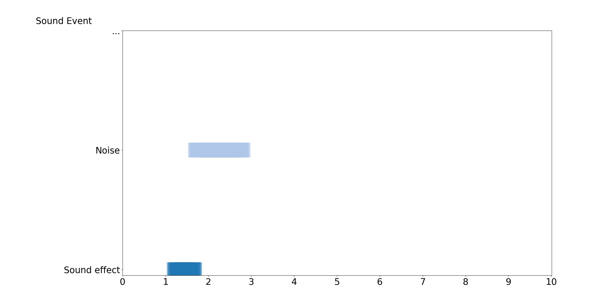 | ||
We only need meows during 1-3, 5-7, and 9-10 seconds, but in the entire audio generated by Tango, there are meows presenting throughout the audio.
[Our Model, Tango, GT]: Text Condition: A series of meows come from a mechanism.
| Our Model | Tango | GT |
|---|---|---|
| 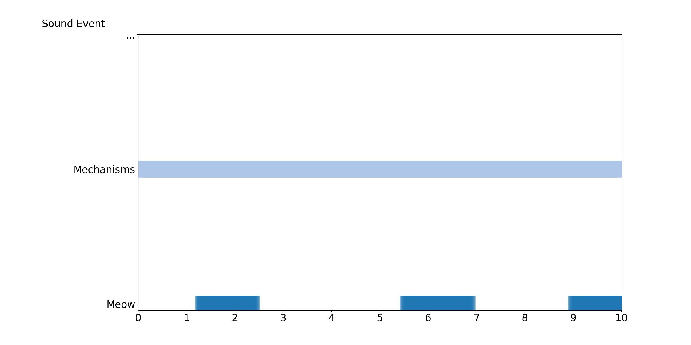 | ||
3.1.2 Pitch
We only need a high pitch sound (train whistle) at the beginning, but in the audio generated by Tango, it appears at the middle.
[Our model, Tango, GT]: Text Condition: The sounds of a train and clicking wheels can be heard.
| Our Model | Tango | GT |
|---|---|---|
| 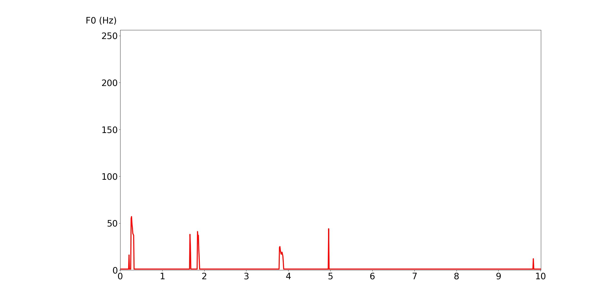 | ||
We only need a high pitch sound during 1-6 seconds, but in the audio generated by Tango, it appears at the beginning.
[Our Model, Tango, GT]: Text Condition: People breathe, make human sounds, and tap with background noise.
| Our Model | Tango | GT |
|---|---|---|
| 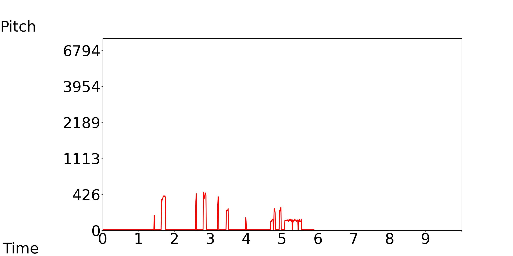 | ||
3.1.3 Energy
We only need two high energy segments, but in the audio generated by Tango, it has a lot of energy fluctuations.
[Our Model, Tango, GT]: Text Condition: Mechanisms, clicking, a buzzer, an alarm, and breathing are heard.
| Our Model | Tango | GT |
|---|---|---|
| 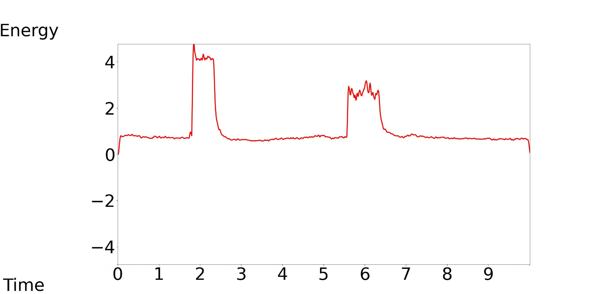 | ||
We only need with low energy in the middle and high energy at the beginning and end, but in the audio generated by Tango, its energy does not change.
[Our model, Tango, GT]: Text Condition: Music is playing.
| Our Model | Tango | GT |
|---|---|---|
| 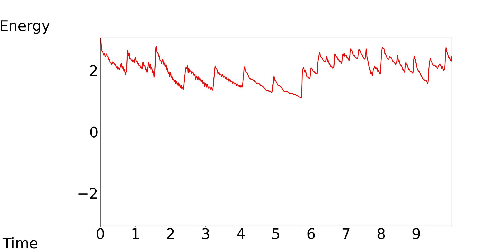 | ||
3.2 Comparison of Different Control Conditions
Note that audio samples in this part are from our model, which show that our model can control the attributes of audio with different control conditions.
3.2.1 Temporal Order
Our model accepts the timestamp of varying durations, onsets and end offsets as the control conditions, while keeping the text condition consistent.
Our Model-[1, 2, 3]: Text Condition: Various sound effects and noise are present.
| Our Model-1 | Our Model-2 | Our Model-3 |
|---|---|---|
| 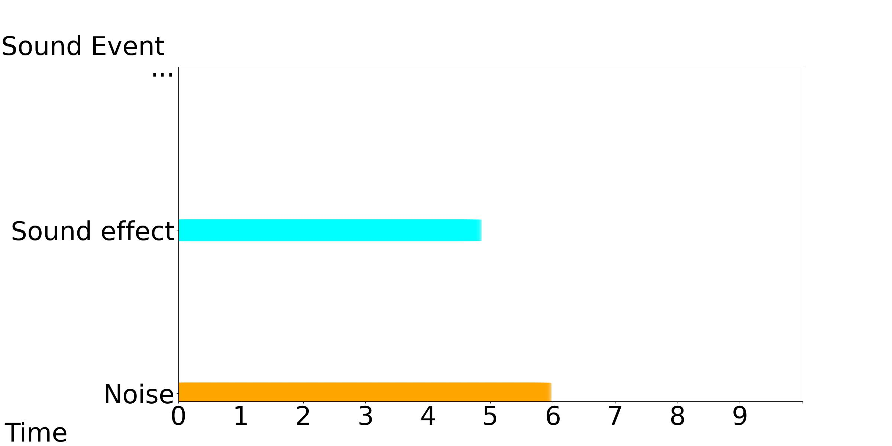 | 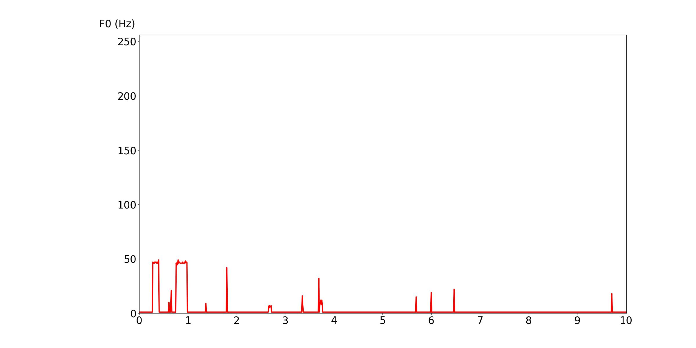 | |
3.2.2 Pitch
Our model accepts the medium, low, and high pitch contour as the control conditions, while keeping the text condition consistent.
Our Model-[1, 2, 3]: Text Condition: The sounds of a train and clicking wheels can be heard.
| Our Model-1 | Our Model-2 | Our Model-3 |
|---|---|---|
| 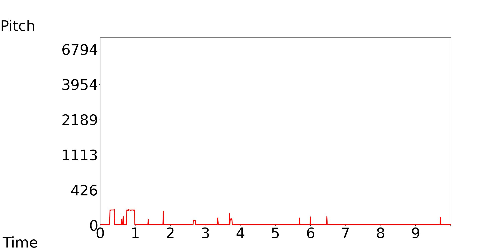 | 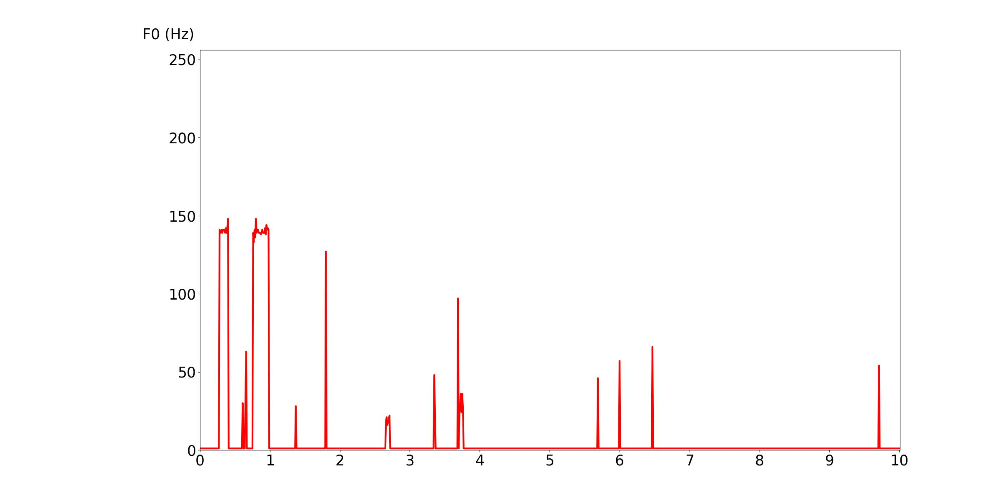 | |
3.2.3 Energy
Our model accepts the medium, low, and high energy contour as the control conditions, while keeping the text condition consistent.
Our Model-[1, 2, 3]: Text Condition: Mechanisms, clicking, a buzzer, an alarm, and breathing are heard.
| Our Model-1 | Our Model-2 | Our Model-3 |
|---|---|---|
| 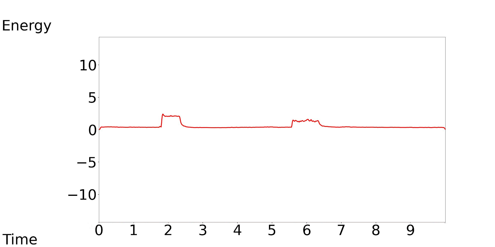 | 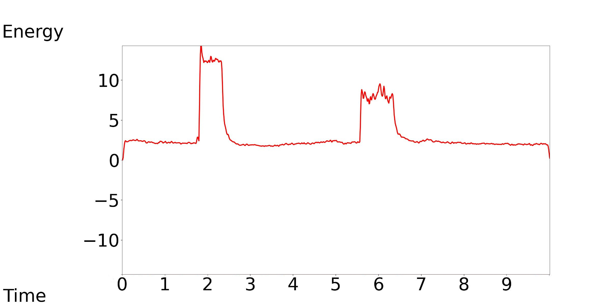 | |
3.3 Comparison of Different Text Conditions
Note that audio samples in this part are from our model, which show that our model can generate different audio using different text control conditions while maintaining consistency with the control conditions.
3.3.1 Temporal Order
Our model accepts different text conditions, while keeping the timestamp as control condition consistent.
Our Model-1: Text Condition: The sound of a door closing in a small room is the only sound in this recording.
Our Model-2: Text Condition: In this recording, the sole sound is that of a door shutting in a small room.
Our Model-3: Text Condition: There is only the sound of a door closing in a small room within this recording.
| Our Model-1 | Our Model-2 | Our Model-3 |
|---|---|---|
| 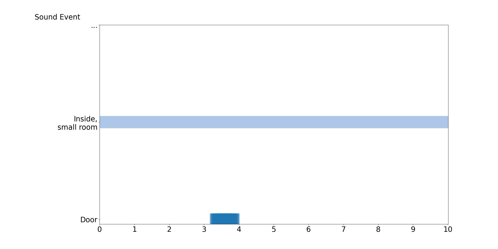 | ||
3.3.2 Pitch
Our model accepts different text conditions, while keeping the pitch contour as control condition consistent.
Our Model-1: Text Condition: Waves, surf, and breathing sounds are heard.
Our Model-2: Text Condition: One can hear the sounds of waves, surf, and breathing in the recording.
Our Model-3: Text Condition: The recording captures the sound of waves, surf, and breathing.
| Our Model-1 | Our Model-2 | Our Model-3 |
|---|---|---|
| 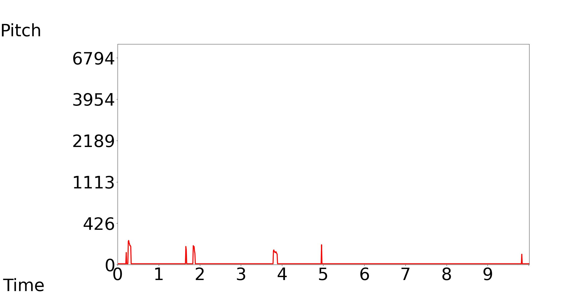 | ||
3.3.3 Energy
Our model accepts different text conditions, while keeping the energy contour as control condition consistent.
Our Model-1: Text Condition: Music is playing.
Our Model-2: Text Condition: Play music.
Our Model-3: Text Condition: Music can be heard.
| Our Model-1 | Our Model-2 | Our Model-3 |
|---|---|---|